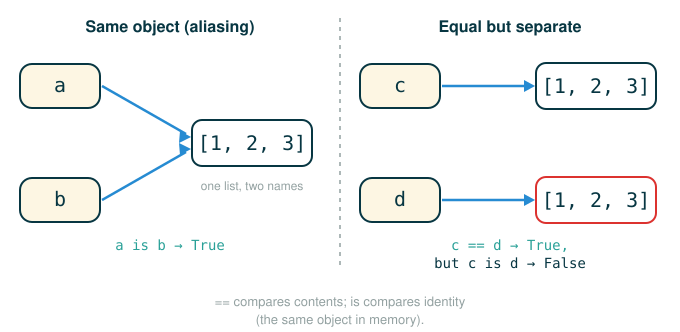

2.4 Objects, Mutable Sequences, and Identity
Up to now, almost every value you have worked with has behaved like a fact written in permanent ink. The integer 4 is always 4. The string "Berkeley" never loses a letter or grows one. When you wanted a different value, you computed a fresh one and left the old one untouched.
This lesson introduces a value that breaks that habit: a value that can stay the same value while its contents change over time. By the end you will be able to do five things: explain what an object is and why methods live on objects, mutate a list in place with its built-in methods, predict what happens when two names point at the same list, tell is apart from ==, and reason about tuples — including the surprising case of a mutable object trapped inside an immutable one.
The habit to build here is suspicion about names. The moment more than one name can point at the same changeable object, you have to ask a new question every time you read a line: not just "what is this name's value?" but "could a line that never mentions this name still change what it sees?"
A Backpack Stays the Same Backpack
Think about your backpack. This morning it held a laptop and a water bottle. This afternoon you took out the bottle and added three textbooks. Nobody would say you now own a different backpack. It is the same backpack — same identity — even though its contents are completely different.
A bank account works the same way. Your balance changes every time you spend or deposit, but it is still your account, with the same account number, the same identity, throughout.
That is exactly the behavior we are adding to Python. So far our values have been like numbers painted on a wall: to change one, you repaint, producing a new painting. Mutable values are like backpacks: the container keeps its identity, and we reach inside to rearrange what it holds. This distinction sounds small, but it forces the machine model to track two separate facts about every name — what value it refers to, and whether that value can change underneath it.
Objects Bundle Information With Behavior
In Python, every value is an object. An object is a bundle of two things: information, and behavior that makes sense for that information. A date object, for instance, stores the year, month, and day, and it also knows how to do date-specific work, like measuring the gap to another date or printing itself in a readable format.
We start with a date built from Python's standard library.
# (1)
from datetime import date
tues = date(2014, 5, 13)
The name date refers to a class, which you can think of as a value-maker: a factory that builds objects of a particular kind. The call date(2014, 5, 13) runs that factory and hands back one date object. The assignment binds tues to it.
The environment after these two lines looks like this:
Global frame
+------+--------------------------+
| date | date class |
| tues | date object: 2014-05-13 |
+------+--------------------------+The object bound to tues is more than the three numbers 2014, 5, and 13 sitting side by side. It behaves like a date. Watch what happens when we subtract one date from another.
# (2)
print(date(2014, 5, 19) - tues)
The printed output is:
6 days, 0:00:00Python knew how to subtract two date objects and produce a span of time, because that behavior is bundled into the date object itself. Plain numbers could not do this; the date object can.
Dot Notation Reaches Inside an Object
Objects hold named values called attributes, and the way you reach an attribute is dot notation. The general shape is a left expression, a dot, and a name on the right.
object_expression.attribute_nameThe dot is an instruction with an order to it: first evaluate the expression on the left down to an object, then look inside that object for the attribute named on the right. Let us read the year out of tues.
# (3)
tues.year
The value is:
2014Here is the same line as a follow-the-line anatomy. Read each branch as a thing the part does, and read the final branch as the value the whole expression produces.
tues.year
├─ tues ........ evaluates to the date object stored under this name
├─ . ........... attribute-lookup operator: look inside the left object
├─ year ........ names the attribute to fetch from that object
└─ evaluates to 2014The key idea is that year is not a free-standing global name. If you typed year on its own, Python would have no idea you meant the year of tues. The dot is what tells Python which object owns the attribute and where to look for it.
Methods Are Object-Specific Functions
Some attributes are functions. A function-valued attribute is called a method. In plain language, we say the object "knows how" to do something. Reaching a method through the dot, then calling it with parentheses, asks the object to perform that behavior.
# (4)
tues.strftime('%A, %B %d')
The result is:
'Tuesday, May 13'The follow-the-line view shows that two pieces of information feed this call: the object on the left supplies the stored date, and the argument inside the parentheses supplies the formatting instructions.
tues.strftime('%A, %B %d')
├─ tues ................ the date object that owns the method
├─ . ................... attribute-lookup operator
├─ strftime ............ names the "string-format-time" method on that object
├─ ('%A, %B %d') ....... calls it, passing a format string as the argument
└─ evaluates to 'Tuesday, May 13'The format string is a small language of its own. Each percent-code is a placeholder the method fills in from the stored date:
%A full weekday name
%B full month name
%d day of the monthSo strftime reads the date out of tues, fills %A, %B, and %d with Tuesday, May, and 13, and returns the finished string.
Strings Are Objects, So Strings Have Methods
Because every value in Python is an object, strings have methods too. Here are three independent expressions on strings.
# (5)
'1234'.isnumeric()
'rOBERT dE nIRO'.swapcase()
'eyes'.upper().endswith('YES')
The three results, in order, are:
True
'Robert De Niro'
TrueThe first asks a string whether all of its characters are numeric. The second asks a string to swap the case of every letter. The third is worth slowing down, because it is a method chain: the value one method returns immediately becomes the object the next method is called on.
'eyes'.upper().endswith('YES')
├─ 'eyes' ............... the starting string object
├─ .upper() ............. asks that string for an all-uppercase copy → 'EYES'
├─ .endswith('YES') ..... asks 'EYES' whether it ends with 'YES'
└─ evaluates to TrueRead it strictly left to right: start with 'eyes', call upper() to get 'EYES', then call endswith('YES') on that new string. The answer is True because 'EYES' does end with 'YES'. The string 'eyes' itself is never changed — strings are immutable, so each method hands back a brand-new string rather than altering the original.
Lists Are Mutable Objects
Numbers and strings are immutable: once made, they cannot change. A list is the first object you have met that is mutable, meaning its contents can change without Python ever creating a new list object.
Picture a list as a labeled tray. The tray keeps its identity — it is the same tray — while you add, remove, and rearrange the objects sitting in it. The original text frames list mutation with a simplified history of playing-card suits, which started as Chinese coin, string, and myriad suits and changed over time. We begin with two names.
# (6)
chinese = ['coin', 'string', 'myriad']
suits = chinese
The second line is the one to watch. It does not copy the list. It binds a second name to the very same list object, so both names now point at one object:
chinese ──┐
▼
['coin', 'string', 'myriad']
▲
suits ────┘This is one list with two labels, not two lists. Hold onto that picture — it is the source of every surprise in the rest of this lesson.
Mutation Methods Change a List in Place
List methods can change a list without making a new one. The original text applies four of them in sequence to rename the suits into the familiar Western set. Here is the exact transcript, including what pop returns.
>>> suits.pop() # Remove and return the final element
'myriad'
>>> suits.remove('string') # Remove the first element that equals the argument
>>> suits.append('cup') # Add an element to the end
>>> suits.extend(['sword', 'club']) # Add all elements of a sequence to the endAs runnable code, the same four calls are:
# (7)
suits.pop()
suits.remove('string')
suits.append('cup')
suits.extend(['sword', 'club'])
What each call does:
suits.pop() ........................ removes and returns the last element
suits.remove('string') ............. removes the first element equal to 'string'
suits.append('cup') ................ adds one element to the end
suits.extend(['sword', 'club']) .... adds every element of a sequence to the endNotice that pop is special among these: it both changes the list and returns the removed value, which is why the REPL printed 'myriad'. The others change the list and return nothing. After all four lines, the list holds ['coin', 'cup', 'sword', 'club'], and suits still points at the same list object it started with — only the contents moved.
Assignment Can Mutate a List Too
Mutation is not limited to method calls. Assigning to an indexed position replaces a single slot inside the existing list.
>>> suits[2] = 'spade' # Replace an element
>>> suits
['coin', 'cup', 'spade', 'club']As runnable code:
# (8)
suits[2] = 'spade'
suits
The value of suits is:
['coin', 'cup', 'spade', 'club']The statement suits[2] = 'spade' does not rebind suits to a new list. It reaches into the existing list and overwrites the object at index 2. Here is the action as a follow-the-line anatomy. Because this is a statement, the final branch states the action it performs rather than a value.
suits[2] = 'spade'
├─ suits ......... the list object to mutate
├─ [2] ........... selects the slot at index 2 inside that list
├─ = ............. element-assignment: store into that slot
├─ 'spade' ....... the new value for the slot
└─ performs overwrites index 2 of the existing list with 'spade'A slice on the left of = replaces several slots at once.
>>> suits[0:2] = ['heart', 'diamond'] # Replace a slice
>>> suits
['heart', 'diamond', 'spade', 'club']As runnable code:
# (9)
suits[0:2] = ['heart', 'diamond']
suits
The result is:
['heart', 'diamond', 'spade', 'club']The anatomy of the slice assignment:
suits[0:2] = ['heart', 'diamond']
├─ suits ..................... the list object to mutate
├─ [0:2] ..................... the slice from index 0 up to but not including 2
├─ = ......................... slice-assignment: replace those slots
├─ ['heart', 'diamond'] ...... the replacement values
└─ performs swaps the first two elements for heart and diamondCopying a List Is Not the Same as Sharing a List
Sometimes you genuinely want a separate list with the same contents. The list constructor makes one. Here the original text builds a copy and then deliberately nests the original inside it.
>>> nest = list(suits) # Bind "nest" to a second list with the same elements
>>> nest[0] = suits # Create a nested listAs runnable code:
# (11)
nest = list(suits)
nest[0] = suits
After the first line, nest is a brand-new list object that happens to hold the same four strings as suits. After the second line, nest's element at index 0 is no longer a string — it is a pointer to the very same list object that suits names. So nest shares one element with suits but is otherwise independent:
suits ──► ['heart', 'diamond', 'spade', 'club']
▲
│ (nest[0] points here)
│
nest ──► [ • , 'diamond', 'spade', 'club' ]Now mutate suits by inserting an element, then look at nest.
>>> suits.insert(2, 'Joker') # Insert an element at index 2, shifting the rest
>>> nest
[['heart', 'diamond', 'Joker', 'spade', 'club'], 'diamond', 'spade', 'club']As runnable code:
# (12)
suits.insert(2, 'Joker')
nest
The result is:
[['heart', 'diamond', 'Joker', 'spade', 'club'], 'diamond', 'spade', 'club']Only the first element of nest reflects the change, because only that element is the shared list object. The other three elements of nest are independent strings that never moved. The anatomy of the insert:
suits.insert(2, 'Joker')
├─ suits ........ the list object to mutate
├─ .insert ...... the insert-at-index method
├─ (2, 'Joker') . at index 2, place 'Joker', shifting later elements right
└─ performs lengthens the shared list, so nest[0] now shows the Joker tooWe can undo that insert by reaching the same shared object through nest instead of through suits.
>>> nest[0].pop(2)
'Joker'
>>> suits
['heart', 'diamond', 'spade', 'club']As runnable code:
# (13)
nest[0].pop(2)
suits
The popped value and the resulting suits are:
'Joker'
['heart', 'diamond', 'spade', 'club']The expression nest[0].pop(2) first follows nest[0] to the shared list, then pops index 2 from it. Since suits names that same object, suits shows the removal even though the line never mentioned suits. This is the sharing rule running in the other direction.
Identity Versus Equality
The card example forces a precise distinction that Python gives you two different operators for. They answer two different questions:
The figure below contrasts identity against value equality side by side.

== asks whether two values have equal contents
is asks whether two expressions evaluate to the exact same objectThe original text demonstrates all three combinations at once.
>>> suits is nest[0]
True
>>> suits is ['heart', 'diamond', 'spade', 'club']
False
>>> suits == ['heart', 'diamond', 'spade', 'club']
TrueAs runnable code:
# (14)
suits is nest[0]
suits is ['heart', 'diamond', 'spade', 'club']
suits == ['heart', 'diamond', 'spade', 'club']
The three results, in order, are:
True
False
TrueThe first is True because nest[0] is literally the same object as suits — we made it so. The second is False because the list literal on the right builds a fresh, separate list object; identical contents, different identity. The third is True because == only cares about contents, and the contents match. Two objects can be equal without being identical; only is reports identity.
List Comprehensions Always Build a New List
A list comprehension never mutates an existing list — it constructs a new one. The original text uses each suit name to look up its Unicode playing-card symbol.
>>> from unicodedata import lookup
>>> [lookup('WHITE ' + s.upper() + ' SUIT') for s in suits]
['♡', '♢', '♤', '♧']As runnable code:
# (15)
from unicodedata import lookup
[lookup('WHITE ' + s.upper() + ' SUIT') for s in suits]
The result is:
['♡', '♢', '♤', '♧']For each string s in suits, the comprehension builds a Unicode character name like 'WHITE HEART SUIT', asks lookup for the matching symbol, and collects the symbols into a new list. The list suits is read but never changed.
Tuples Are Immutable Sequences
A tuple is an immutable sequence. People often write tuples with parentheses, but the part that actually makes a tuple is the comma. Here are three tuple expressions.
>>> 1, 2 + 3
(1, 5)
>>> ("the", 1, ("and", "only"))
('the', 1, ('and', 'only'))
>>> type( (10, 20) )
<class 'tuple'>As runnable code:
# (16)
1, 2 + 3
("the", 1, ("and", "only"))
type((10, 20))
The three results, in order, are:
(1, 5)
('the', 1, ('and', 'only'))
<class 'tuple'>The first shows the comma at work: 1, 2 + 3 evaluates each piece and bundles the two results into the pair (1, 5) — note that 2 + 3 is computed first, so the second element is 5, not the two items 2 and 3. The second shows that tuples can nest. The third confirms the type is tuple.
Empty and one-element tuples need careful syntax.
>>> () # 0 elements
()
>>> (10,) # 1 element
(10,)As runnable code:
# (17)
()
(10,)
The results are:
()
(10,)The trailing comma in (10,) is mandatory and easy to forget. Without it, (10) is just the integer 10 wrapped in ordinary grouping parentheses — not a tuple at all. The comma, not the parentheses, is what makes it a one-element tuple.
Tuples support the read-only sequence operations.
>>> code = ("up", "up", "down", "down") + ("left", "right") * 2
>>> len(code)
8
>>> code[3]
'down'
>>> code.count("down")
2
>>> code.index("left")
4As runnable code:
# (18)
code = ("up", "up", "down", "down") + ("left", "right") * 2
len(code)
code[3]
code.count("down")
code.index("left")
The four results, in order, are:
8
'down'
2
4Here + concatenates two tuples and * repeats one, exactly as they do for strings, so code ends up eight elements long. You can take its length, index into it, count an element, and find an element's first index. What you cannot do is append, extend, or pop — those mutating methods do not exist on tuples, because tuples are immutable.
A Mutable Object Can Live Inside an Immutable Tuple
Here is the subtlety that trips up almost everyone. A tuple fixes which objects it contains and in what order — that structure cannot change. But if one of those objects is itself mutable, that object can still mutate. Freezing the tuple does not freeze the list inside it.
>>> nest = (10, 20, [30, 40])
>>> nest[2].pop()
40
>>> nest
(10, 20, [30])As runnable code:
# (19)
nest = (10, 20, [30, 40])
nest[2].pop()
nest
The popped value and the resulting tuple are:
40
(10, 20, [30])Trace it carefully. The tuple nest still has exactly three elements, and its third element is still the same list object it has always been — we never replaced it. What changed is the inside of that list: nest[2].pop() followed nest[2] to the list and removed its last item. The tuple's structure is untouched; the mutable element it holds is not. Trying instead to do nest[2] = 0 would be a real error, because that would change which object the tuple holds at index 2, and tuples forbid that.
Tuples Hide Behind Multiple Assignment
You have already been using tuples without seeing them. Multiple assignment builds a tuple on the right and unpacks it on the left.
# (20)
x, y = 10, 20
The follow-the-line view treats the right side as a two-element bundle that gets matched, position by position, to the names on the left. Because this is a statement, the final branch states the action.
x, y = 10, 20
├─ x, y ......... two target names, in order
├─ = ............ assignment
├─ 10, 20 ....... two values, comma-separated, bundled as the pair (10, 20)
└─ performs binds x to 10 and y to 20 in the current frameThe full machine model, step by step:
1. Evaluate the right side: 10, 20.
2. Bundle the results into the ordered pair (10, 20).
3. Match the first value with the first target name, x.
4. Match the second value with the second target name, y.
5. Bind x to 10 and y to 20 in the current frame.The comma is doing the same conceptual job it did in tuple literals: it separates multiple values into one ordered bundle. Parentheses can make a tuple easier to see, but the comma is the essential signal that a tuple is being formed and, here, unpacked.
⚠Common Beginner Traps
The first trap is believing that assignment always copies a value. It does not — for a mutable object, assignment copies the pointer, not the object.
# (21)
a = [1, 2]
b = a
b.append(3)
a
The result is:
[1, 2, 3]The name b did not receive a separate list. It received a second pointer to the same list, so appending through b is visible through a.
The second trap is confusing is with ==. Equal contents do not imply the same object.
# (22)
[1, 2] == [1, 2]
[1, 2] is [1, 2]
The results are:
True
FalseBoth literals have equal contents, so == is True. But each literal builds its own separate list object, so is is False.
The third trap is assuming a tuple freezes everything inside it. The tuple's structure is frozen, but a mutable object stored in the tuple can still mutate, exactly as you saw with nest = (10, 20, [30, 40]).
The fourth trap is forgetting the comma in a one-element tuple and writing (10) when you meant (10,). The first is just the number 10; only the second is a tuple.
✓Check Your Understanding
- Why do
chineseandsuitsshow the same changed list, even though no mutation line mentionedchinese? - What is the difference between
suits == nest[0]andsuits is nest[0]? - Why does
list(suits)create a different kind of relationship thansuits = chinese? - Why does
(10,)need a comma, and what is(10)without it? - Given
t = ('a', ['b', 'c'], 'd'), predict whattevaluates to after runningt[1].append('e'), and say why that line does not raise an error.
Show the answers
- Both names point at the same list object. Mutating that object through one name changes what the other name sees, because neither name holds a private copy.
==asks whether the two have equal contents;isasks whether the two expressions evaluate to the exact same object. Here both areTruebecausenest[0]is the same object assuits, but they are answering different questions.list(suits)builds a brand-new outer list object, so it is a copy with separate identity.suits = chinesemakes a second name for the one existing list object, so the two names share identity.- Without the comma,
(10)is just the integer10inside grouping parentheses. The comma is what tells Python to build a one-element tuple, so(10,)is a tuple and(10)is not. tbecomes('a', ['b', 'c', 'e'], 'd'). The line does not raise an error because it never changes which objects the tuple holds:t[1]follows the tuple to the same list object it already contained, and.append('e')mutates that list in place. The tuple's structure is untouched, so only the mutable element's contents change.
§Summary
Every value in Python is an object: a bundle of information and behavior, reached through dot notation for attributes and methods. Numbers and strings are immutable, but lists are mutable, so a list can keep its identity while its contents change in place through methods like pop, remove, append, extend, and insert, or through element and slice assignment. That power comes with a hazard: when two names point at the same list, a change through one name appears through the other, so you must track identity, not just contents. Python separates those two ideas with is (same object) and == (equal contents). Tuples are immutable sequences — their structure is fixed and they have no mutating methods — but a mutable object stored inside a tuple can still mutate, and the same comma that builds a tuple also drives multiple assignment. You do not need to know these yet, but the identity-and-mutation ideas here are the foundation for three topics in the sections ahead: local state, nonlocal assignment, and object-oriented programming.
▶Step-Through Checkpoint
This block is the lesson's capstone. It builds one list, makes a second name for it, mutates the list through several methods and assignments, then copies it, nests the original inside the copy, and ends on an identity test. Stepping through it draws the environment diagram the machine is really building: a single list object lives on the heap (the area of memory where objects are kept, drawn off to the side of the frames) with both chinese and suits arrows pointing at it, and you watch its contents rewrite in place through pop, remove, append, extend, and the index and slice assignments before nest = list(suits) puts a second list object on the heap and nest[0] = suits draws a third arrow back to the shared one. Before you step through it, write down three predictions: which line first leaves a second list object on screen, how many list objects exist when the final line runs, and how many arrows land on the list suits names at that moment.
# (23)
chinese = ['coin', 'string', 'myriad']
suits = chinese
suits.pop()
suits.remove('string')
suits.append('cup')
suits.extend(['sword', 'club'])
suits[2] = 'spade'
suits[0:2] = ['heart', 'diamond']
nest = list(suits)
nest[0] = suits
suits is nest[0]
Step through it one line at a time and check each prediction as the picture changes. Through every mutation line, chinese and suits stay two arrows landing on one list object that changes shape under them; no second list appears until nest = list(suits) builds the copy. After nest[0] = suits, a third arrow runs from inside nest back to the shared list — three arrows, two list objects. The final line evaluates to True, because nest[0] and suits are not merely equal — they are the same object.